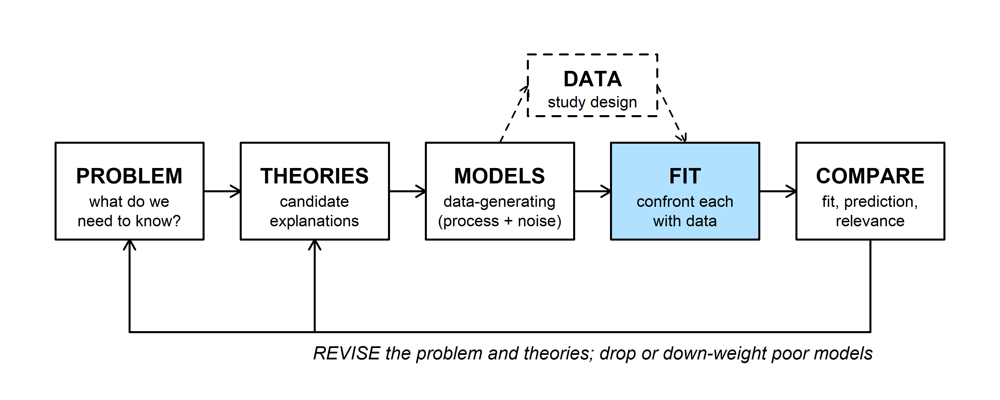
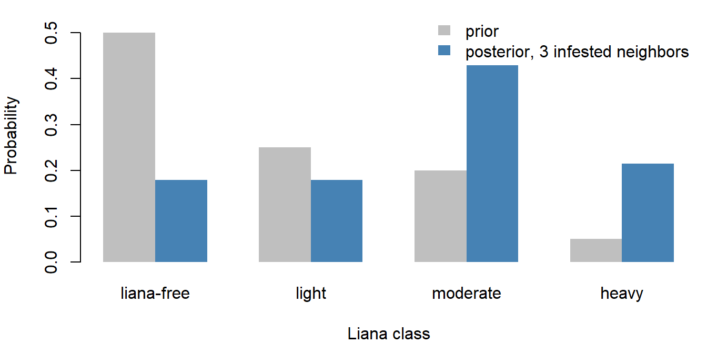
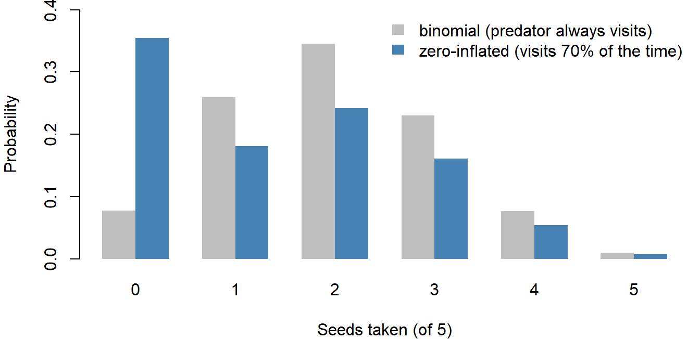

Week 3: Probability Rules and Bayes' Rule
NRES 746
Sept. 8-9, 2026
R code from this page is also in the companion script. No packages beyond base R are needed.
This material follows Bolker, Ecological Models and Data in R, sections 4.1 (why variability matters, pp. 140-141), 4.2 (basic probability theory, pp. 141-145), and 4.3 (Bayes' rule, pp. 145-152).
Adding and multiplying probabilities
Two rules do most of the work of combining probabilities: add the probabilities of outcomes that can't happen together, and multiply the probabilities of independent events. This part sets up those rules, plus the language of sample spaces and events. Everything else on the page is built from them.
1. Big picture

Ecological data vary for several reasons (Bolker 4.1). Measurements are imprecise. Individuals with the same expected fate live or die by chance (demographic stochasticity). Rates themselves change from place to place and year to year (environmental stochasticity). A data-generating model (MODELS) describes that variation with probability, so the rules of probability are the grammar for writing models down and, later, for fitting them.
2. Sample spaces and events
A pine seed that lands on the forest floor ends up with exactly one of four fates: eaten by a rodent, eaten by a bird, germinating, or dying in the soil. Those four outcomes make up the sample space, the set of everything that could happen. An event is any set of outcomes: "eaten" is the event {rodent, bird}. A probability assigns each event a number, following three rules (Kolmogorov's axioms):
- No probability is negative: \(P(A) \ge 0\).
- Something in the sample space happens: \(P(\text{all outcomes}) = 1\).
- If \(A\) and \(B\) can't happen together (they are mutually exclusive), \(P(A \text{ or } B) = P(A) + P(B)\).
fates <- c(rodent = 0.35, bird = 0.15, germinate = 0.10, soil = 0.40)
sum(fates) # rule 2## [1] 1fates["rodent"] + fates["bird"] # P(eaten), by rule 3## rodent
## 0.51 - fates["germinate"] # P(does not germinate)## germinate
## 0.9A seed can't be eaten by a rodent and by a bird, so \(P(\text{eaten}) = 0.35 + 0.15 = 0.50\). The last line uses a consequence of rules 2 and 3, the complement rule: \(P(\text{not } A) = 1 - P(A)\), since \(A\) and "not \(A\)" are mutually exclusive and together cover everything.
3. Multiplying probabilities
A probability times a count gives an expected count. If 200 seeds fall and each is eaten by a rodent with probability 0.35, expect \(200 \times 0.35 = 70\) rodent-eaten seeds. The actual number will vary around 70 from one batch of seeds to the next.
Independent events multiply. Two observers search the same plot for nests without talking to each other. Each finds a given nest with probability 0.6. If finding a nest is independent between observers, the chance that both find it is \(0.6 \times 0.6\). The four possible outcomes for one nest:
p_find <- 0.6
outcomes <- c(both = p_find * p_find,
only_1 = p_find * (1 - p_find),
only_2 = (1 - p_find) * p_find,
neither = (1 - p_find) * (1 - p_find))
outcomes## both only_1 only_2 neither
## 0.36 0.24 0.24 0.16sum(outcomes)## [1] 11 - outcomes["neither"] # P(at least one observer finds it)## neither
## 0.84The four outcomes are mutually exclusive and add to 1. "At least one observer finds it" has probability 0.84, which is easiest to get from the complement (neither finds it, 0.16).
Adding the two observers' probabilities, \(0.6 + 0.6 = 1.2\), can't be right. The two events overlap (both observers can find the same nest), so the overlap gets counted twice. The general addition rule subtracts it once:
\[P(A \text{ or } B) = P(A) + P(B) - P(A \text{ and } B) = 0.6 + 0.6 - 0.36 = 0.84.\]
Question: Real nests differ in how well they are hidden, so a nest one observer misses is often missed by the other too. Is the true chance that both miss a nest more or less than 0.16? What does that do to an estimate of how many nests nobody found?
Conditional probability and Bayes' rule
Conditional probability describes how knowing one thing changes the probability of another. Rearranged, it gives Bayes' rule, which turns the probability of the data under a hypothesis into the probability of the hypothesis given the data. The WOD for this class (WODs are short warm-up exercises that open each lecture) was a puzzle about dice, lottery tickets, and shared birthdays; it is worked through with the counting material.
1. Big picture

A model tells us how likely the data are if a hypothesis is true, \(P(\text{data} \mid \text{hypothesis})\). What we usually want is the reverse: how believable is each hypothesis, given the data? The two are different numbers, and Bayes' rule converts one into the other. The probability of the data under a hypothesis is called the likelihood, and it drives the FIT step for the rest of the course.
2. Joint, marginal, and conditional probability
A survey of a woodland plot records 241 trees by species and by whether they carry mistletoe:
trees <- matrix(c(39, 76, 101, 25), nrow = 2,
dimnames = list(status = c("infested", "healthy"),
species = c("juniper", "pinyon")))
trees## species
## status juniper pinyon
## infested 39 101
## healthy 76 25p_trees <- trees / sum(trees) # joint probabilities
round(p_trees, 3)## species
## status juniper pinyon
## infested 0.162 0.419
## healthy 0.315 0.104Pick one tree at random. The joint probability that it is both a healthy tree and a pinyon is one cell divided by the total, \(P(\text{healthy and pinyon}) = 25/241 =\) 0.104. A marginal probability ignores one attribute by summing over it:
p_status <- rowSums(trees) / sum(trees)
p_species <- colSums(trees) / sum(trees)
p_status## infested healthy
## 0.5809129 0.4190871p_species## juniper pinyon
## 0.4771784 0.5228216Multiplying marginals doesn't give the joint probability here:
p_status["healthy"] * p_species["pinyon"] # product of marginals## healthy
## 0.2191078p_trees["healthy", "pinyon"] # actual joint probability## [1] 0.1037344The product, 0.219, is about twice the true value, 0.104. Multiplying only works for independent events, and these two aren't: pinyons here are mostly infested.
Conditional probability narrows the sample space. Among pinyons only, what fraction are healthy?
\[P(\text{healthy} \mid \text{pinyon}) = \frac{P(\text{healthy and pinyon})}{P(\text{pinyon})}.\]
p_trees["healthy", "pinyon"] / p_species["pinyon"] # = 25 / 126## pinyon
## 0.1984127p_trees["healthy", "juniper"] / p_species["juniper"] # = 76 / 115## juniper
## 0.6608696Dividing by \(P(\text{pinyon})\) throws out the junipers and rescales what's left so it adds to 1. A pinyon is healthy with probability 0.198; a juniper, 0.661.
Rearranging the definition gives the multiplication rule, which holds whether or not the events are independent:
\[P(A \text{ and } B) = P(A \mid B)\, P(B).\]
Two events are independent when \(P(A \mid B) = P(A)\): knowing \(B\) doesn't change the probability of \(A\). Only then does the rule simplify to \(P(A)\,P(B)\). Nearly every likelihood in this course multiplies probabilities of separate observations, so it quietly assumes independence.
Law of total probability. A tree is either a pinyon or a juniper, so the chance it is healthy is a weighted average of the two conditional probabilities:
\[P(\text{healthy}) = P(\text{healthy} \mid \text{pinyon})\,P(\text{pinyon}) + P(\text{healthy} \mid \text{juniper})\,P(\text{juniper}).\]
(25 / 126) * p_species["pinyon"] + (76 / 115) * p_species["juniper"]## pinyon
## 0.4190871This matches the marginal, 0.419. (Bolker writes this rule on p. 142 as \(P(A) = P(A \mid B) + P(A \mid \text{not } B)\), leaving out the weights; the weights are needed.)
In the widget, the square has area 1. The column widths are \(P(A)\) and \(P(\text{not } A)\), and the blue height in each column is the conditional probability of \(B\) in that column, so every area is a joint probability. The "Tree plot" button sets \(A\) = pinyon and \(B\) = healthy.
Question: Start from the tree plot settings and move \(P(B \mid \text{not } A)\) until the top of the blue region is level across both columns. What happens to \(P(A \mid B)\), and how does it compare with \(P(A)\)? What does a level line say about whether species tells you anything about infestation?
3. Bayes' rule
The multiplication rule works in either order:
\[P(A \text{ and } B) = P(A \mid B)\,P(B) = P(B \mid A)\,P(A).\]
Divide by \(P(B)\):
\[P(A \mid B) = \frac{P(B \mid A)\,P(A)}{P(B)}.\]
That's Bayes' rule, a recipe for turning a conditional probability around. For the trees, the chance that a healthy tree is a pinyon:
p_healthy_given_pinyon <- 25 / 126
p_healthy_given_pinyon * p_species["pinyon"] / p_status["healthy"]## pinyon
## 0.247524825 / 101 # straight from the table## [1] 0.2475248\(P(\text{healthy} \mid \text{pinyon}) =\) 0.198 and \(P(\text{pinyon} \mid \text{healthy}) =\) 0.248. They answer different questions, and confusing them is the most common error with conditional probability.
False positives in medical testing (Bolker 4.3.1). A disease infects one person in a million, \(P(I) = 10^{-6}\). A test never misses an infection, \(P(+ \mid I) = 1\), but gives a false positive to 1% of uninfected people, \(P(+ \mid U) = 0.01\). If you test positive, how likely are you to be infected?
Bayes' rule needs \(P(+)\), the overall chance of a positive test. A positive comes from either an infected or an uninfected person, so the law of total probability gives
\[P(+) = P(+ \mid I)\,P(I) + P(+ \mid U)\,P(U).\]
p_inf <- 1e-6
p_pos_inf <- 1
p_pos_unf <- 0.01
p_pos <- p_pos_inf * p_inf + p_pos_unf * (1 - p_inf)
p_pos## [1] 0.01000099p_inf_pos <- p_pos_inf * p_inf / p_pos
p_inf_pos## [1] 9.99901e-05A positive test means a 0.0001 chance of infection, about 1 in 10,000. Almost all positives come from the uninfected majority: the first term of \(P(+)\) is \(10^{-6}\) and the second is about \(10^{-2}\), so the second dominates. In counts, among 100 million people the 100 infected all test positive, along with about a million uninfected people.
Ignoring how rare the condition is (the prior probability) is called the base rate fallacy. The test's accuracy, \(P(+ \mid I) = 1\), answers "if infected, will the test catch it?", not "if positive, am I infected?".
The widget runs the same calculation for 10,000 samples. Think of a test for a condition, such as an invasive species in a water sample: prevalence is the fraction of samples that truly contain it.
Each square is one of 10,000 samples, colored by expected counts (rounded). Dark red: present, tested positive. Pale red: present, missed. Orange: absent, tested positive anyway. Grey: absent, negative.
Question: Start at the default settings. Move sensitivity across its full range, then put it back and do the same with the false positive rate. Which one matters more for \(P(\text{present} \mid +)\), and why? What happens when the false positive rate is 0?
4. More than two hypotheses
With hypotheses \(H_1, H_2, \ldots\) that are mutually exclusive and cover all possibilities, the law of total probability expands the denominator into a sum (Bolker eq. 4.3.7):
\[P(H_i \mid D) = \frac{P(D \mid H_i)\,P(H_i)}{\sum_j P(D \mid H_j)\,P(H_j)}.\]
The parts have names. \(P(H_i)\) is the prior, \(P(D \mid H_i)\) the likelihood, \(P(H_i \mid D)\) the posterior, and the denominator makes the posteriors add to 1.
Liana infestation (Bolker 4.3.2). Saplings in a tropical forest fall into four liana classes, from liana-free to heavily infested. In the forest as a whole the classes make up 50%, 25%, 20%, and 5% of saplings. A new sapling has 3 infested neighbors; field data say the chance of 3 infested neighbors is 0.05, 0.1, 0.3, and 0.6 for saplings in each class.
prior <- c(0.50, 0.25, 0.20, 0.05)
lik <- c(0.05, 0.10, 0.30, 0.60) # P(3 infested neighbors | class)
post <- lik * prior / sum(lik * prior)
round(rbind(prior, likelihood = lik, posterior = post), 3)## [,1] [,2] [,3] [,4]
## prior 0.500 0.250 0.200 0.050
## likelihood 0.050 0.100 0.300 0.600
## posterior 0.179 0.179 0.429 0.214sum(lik) # likelihoods need not add to 1## [1] 1.05
The chance the sapling is heavily infested rises from 0.05 to 0.21. The likelihoods add to 1.05, not 1: each comes from a different class, so they are not a probability distribution over the classes. Multiplying by the prior and dividing by the total converts them into one.
The prior here is a frequency, the share of each class in the forest, so nobody disputes it. Disagreement between Bayesian and frequentist statisticians starts when the hypotheses are values of a parameter (a survival rate, a slope) and the prior expresses a degree of belief rather than a frequency. That use of Bayes' rule is covered with Bayesian inference.
Question: Suppose you knew nothing about how common each class is and gave all four the same prior, 0.25. What would the posterior for heavy infestation be? Why is it so different from 0.21?
Discussion
- In an xkcd comic, a detector reports whether the sun has gone nova. It rolls two dice and lies if both come up six (probability 1/36); otherwise it tells the truth. It says "yes." A frequentist notes that this answer has probability 1/36 < 0.05 if the sun is fine, and concludes the sun has exploded. Write the problem as Bayes' rule. How large would the prior probability of a nova have to be for the posterior to pass 0.5?
- In a nest-monitoring study, 80% of failed nests had a predator recorded on camera. A manager concludes that a nest with a predator on camera has an 80% chance of failing. Which conditional probability did the study measure, which one does the manager want, and what else would you need to know to get it?
- A water sample from a reservoir where invasive mussels have never been found tests positive for their DNA. A second sample, taken the same day, also tests positive. How much should the second positive change your belief, and what could make the two results less independent than they look?
Bonus: the Monty Hall problem
A game show has three doors, a car behind one and goats behind the other two. You pick door 1. The host, who knows where the car is, opens door 2 to show a goat, then offers you the chance to switch to door 3. Should you?
Use Bayes' rule with three hypotheses (car behind door 1, 2, or 3), each with prior 1/3. The data are "the host opened door 2." If the car is behind door 1, the host could open door 2 or door 3, so the likelihood is 1/2. If the car is behind door 2, he would never open it: likelihood 0. If the car is behind door 3, door 2 is his only choice: likelihood 1.
prior_door <- rep(1/3, 3)
lik_door <- c(1/2, 0, 1) # P(host opens door 2 | car behind door i)
lik_door * prior_door / sum(lik_door * prior_door)## [1] 0.3333333 0.0000000 0.6666667Staying wins with probability 1/3 and switching with 2/3. A simulation gives the same answer:
# one game; returns TRUE if the final choice has the car
play_monty <- function(switch_door) {
doors <- 1:3
car <- sample(doors, 1)
pick <- sample(doors, 1)
goats <- setdiff(doors, c(pick, car)) # doors the host may open
opened <- goats[sample(length(goats), 1)]
if (switch_door) pick <- setdiff(doors, c(pick, opened))
pick == car
}
set.seed(31)
mean(replicate(10000, play_monty(switch_door = FALSE)))## [1] 0.336mean(replicate(10000, play_monty(switch_door = TRUE)))## [1] 0.6624The widget plays the game with more doors. The host opens every door except your pick and one other, never revealing the car.
The host knows where the prize is. After your pick, he opens every other door except one, never opening the prize door. Each game is scored twice: once as if you stayed, once as if you switched to the one door he left closed.
Bonus: many zeros from two processes
Bolker (4.2) applies these rules to seed-removal stations. A predator visits a station with probability \(v\); if it visits, it takes each of the \(N\) seeds independently with probability \(p\). Zero seeds can go missing in two mutually exclusive ways: no visit, or a visit that takes nothing. Adding them (law of total probability) gives
\[P(0 \text{ taken}) = (1 - v) + v\,(1 - p)^N, \qquad P(x \text{ taken}) = v \binom{N}{x} p^x (1 - p)^{N - x} \;\; (x > 0).\]
v <- 0.7
p_take <- 0.4
n_seeds <- 5
x_taken <- 0:n_seeds
p_zi <- v * dbinom(x_taken, n_seeds, p_take)
p_zi[1] <- p_zi[1] + (1 - v)
round(p_zi, 3)## [1] 0.354 0.181 0.242 0.161 0.054 0.007sum(p_zi)## [1] 1
The extra 0.30 of probability on zero comes from the stations no predator found. Data with more zeros than a standard distribution allows often have two processes behind them like this: one deciding whether anything can happen, and one deciding how much.